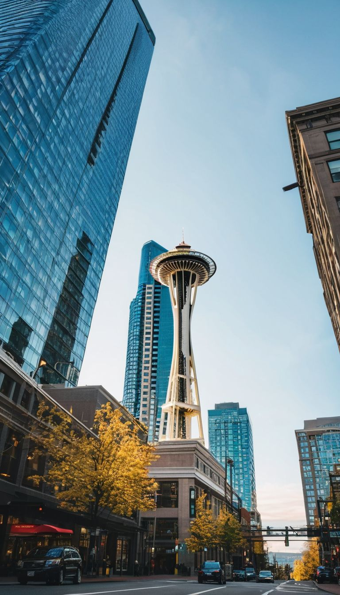
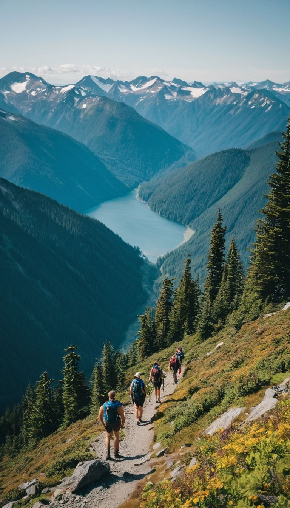
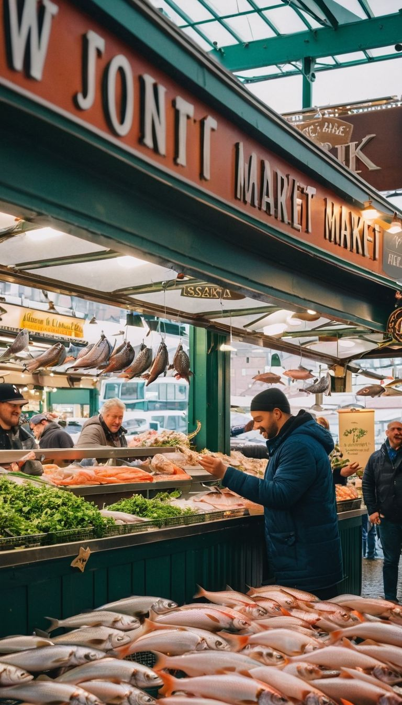

Washington state located in the Pacific Northwest region of the United States...
Washington state (Once known as the Emerald City), Washington is known for its natural beauty and diverse landscapes and metro cities. It features the Cascade and Olympic Mountains, with scenery ranging from rain-forests to deserts. The capital, Olympia, and Seattle the largest city, are cultural and economic centers with a mix of history and modern living. Washington state’s economy has been a result of the innovations in leading technologies, aerospace, computer sciences and agriculture. Tourists come enjoy attractions like, the Space Needle, Mount Rainier National Park, and local cuisine from every corner of the world.
T-Mobile Park, is home of the Mariners! One of many stadiums in Seattle, this landmark stadium epitomizes both the city's love for baseball and its leading edge in architectural innovation.
The Mariners' stadium, officially known as T-Mobile Park, was opened in 1999 as Safeco Field. Its innovative retractable roof allows the games to play in almost any weather. The stadium offers some of the cities best views from every seat. The stadium features a brick façade against setting sun of the Puget Sound. It also has various food vendors, interactive areas, and a rooftop garden, making it a popular event outing location for baseball enthusiasts.
Seattle's famous Pike Place Market known for its fresh seafood and vibrant atmosphere.
Pike Place Market in downtown Seattle, established in 1907, a historic landmark with vendors, food stalls, and various art and craft shops. It offers fresh produce, flowers, seafood, arts and crafts of all kinds, and sometimes hosts street performers when its not raining, art galleries, and cafes.
A strange exhibit showcasing the Dale Chihuly studio glass.
Chihuly Garden and Glass in Seattle, opened in 2012, displays Dale Chihuly's glass art. It features modern art in glass sculptures that almost look like plants and also has an outdoor suspended sculpture garden for guests to visit. The museum is a center for the contemporary glass arts.
|
Popular Attractions
|
Space NeedleSeattle's iconic observation tower, offering panoramic views of Seattle for over 60 years. Washington state's skyline is known for the Space Needle. The Space Needle represents modern engineering and offers a 360-degree view of the Cascade Mountains and Puget Sound. Here are ten facts about this famous structure:
These are but a few of the appealing traits of the Space Needle. It sits as a symbol of Seattle and a testament to modern engineering. |

|
|
Outdoor Recreation
|
Hiking in Washington state offers diverse experiences for all skill levels, with trails in Mount Rainier, Olympic National Park, and the North Cascades. Routes include old-growth forests, waterfalls, and 5 scenic volcanoes. Here are ten facts about hiking and mountaineering in Washington:
Washington's hiking is a top destination for hiking and mountaineering, with challenging climbs and serene wilderness experiences. |

|
|
Shopping Attractions
|
Pike Place MarketPike Place Market in downtown Seattle, established in 1907, is a historic market plaza with diverse vendors, food stalls, and shops. Overlooking Elliott Bay, it offers seafood, flowers, crafts, and features street performers and coffee spots. It remains a key Seattle destination. Here are ten facts about Pike Place Market:
|

|
Explore more about Washington State on Wikipedia.
Legal Disclaimer: All images on this page are CGI and are not intended to depict any real person. This is an educational prototype website designed to demonstrate HTML, CSS, and JavaScript basics.